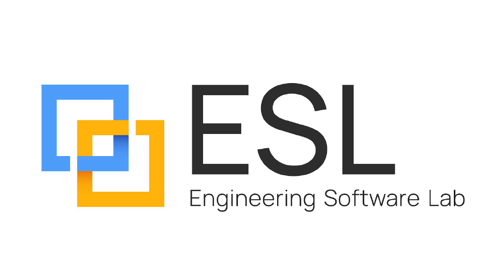
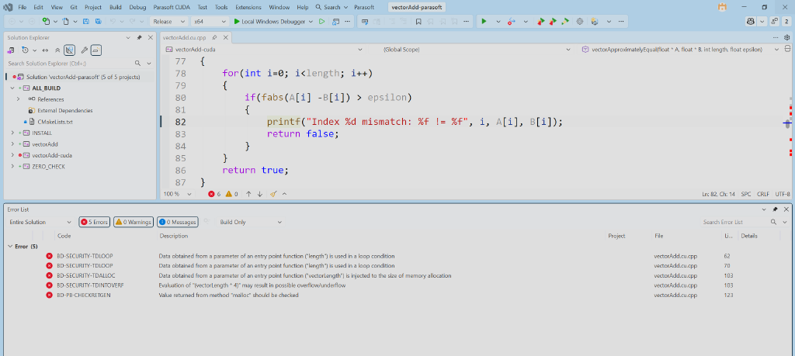
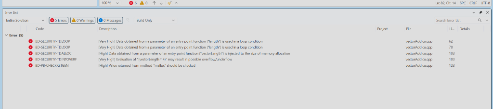
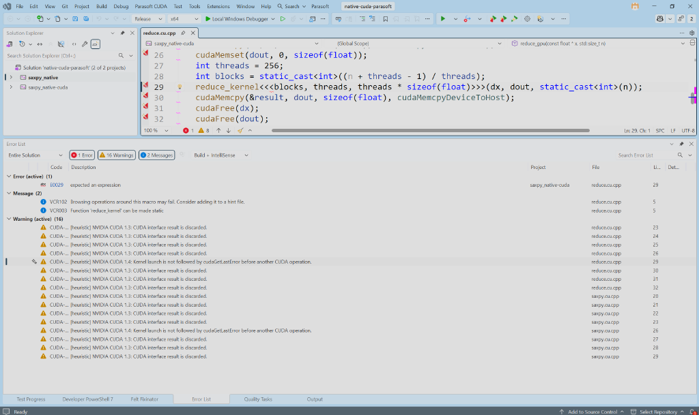
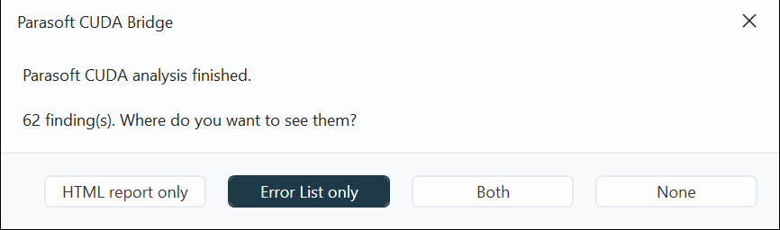
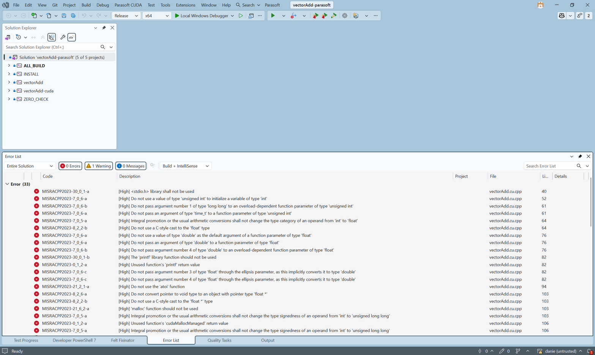
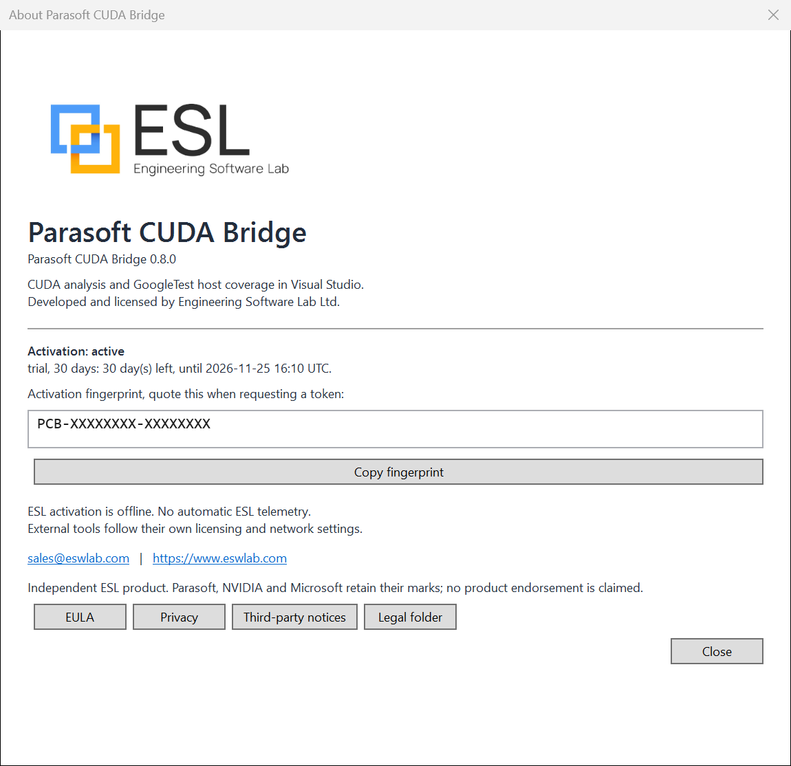
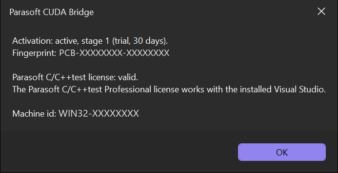
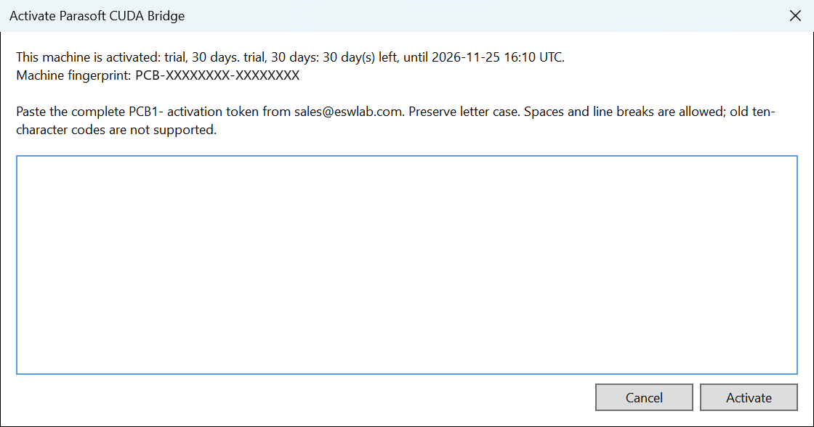

Host C/C++ scope
C/C++test Professional scopes the familiar ClCompile extensions: .c, .cc, .cpp, and .cxx.

Technical evaluation brief · for the Parasoft C++test product team
Implementation map, CUDA rule scope, test evidence, known limits, and questions for product feedback.
Engineering Software Lab Ltd. · 26 October 2026 · Evaluation material, not a release announcement
01 · The integration gap
C/C++test Professional scopes the familiar ClCompile extensions: .c, .cc, .cpp, and .cxx.
.cu uses CudaCompileThe CUDA build task is not a standard C++ compile item. The Bridge creates C++-recognizable companion inputs so C++test can analyze host-visible CUDA source.
02 · Components
pcb.exe is a .NET 10 NativeAOT win-x64 tool. It generates companion solutions, installs local rules, invokes analysis, maps findings, and runs supported tests.
The net472 VSIX adds Parasoft CUDA commands, activation and legal UI, rule selection, configuration management, Error List findings, and editor squiggles.
Python rule scripts are generated into Parasoft RuleWizard files at build time. The source checks remain heuristic and are not a complete C++ front end.
The VSIX bundles the native CLI and ESL rule assets. It does not include Parasoft, CUDA Toolkit, the issuer, or a token-signing private key.
03 · CMake path
nvcc --dryrun to collect host defines, include paths, and options..vcxproj files and .cu.cpp source mirrors.*-parasoft.sln.04 · Source fidelity
.cu is mirrored as .cu.cpp, usually as a hard link, with a copy fallback across volumes..cu path and line.The per-user CUDA compiler profile is adapted from the locally installed Parasoft profile. ESL does not ship Parasoft's base compiler profile or engine.
05 · CUDA Guidelines 3.0.1
CUDA-2_4 is opt-in for compute capability 6.0 and belowReference: NVIDIA CUDA C++ Guidelines for Robust and Safety Critical Programming, v3.0.1.
06 · Real Visual Studio evidence


1 of 1 file, 144 source lines, 5 findings: 3 Very High and 2 High.
These are analyzer findings to review, not confirmed defects. The screenshot's File column shows the generated .cu.cpp mirror, so it does not prove original-path presentation.
07 · CUDA rule findings

This native-project capture is not the CMake vectorAdd run above. Its 16 warning entries are shown as heuristic CUDA findings.
The active E0029 entry is a separate IDE diagnostic. This screenshot is not evidence of a clean build.
08 · Rule-pack QA
6,008 StdViol records and zero failed targets in the selected sample. Two Linux-only targets were 0/0 and are not included in the Windows target count.
Violation records are not unique confirmed defects. This sample measures rule execution and output handling, not correctness, completeness, or safety compliance.
09 · Historical stress runs
| Project | StdViol | FlowViol | Files | Lines |
|---|---|---|---|---|
| llama.cpp | 40,919 | 559 | 702 / 702 | 376,144 |
| nvbench | 3,040 | 40 | 45 / 45 | 18,351 |
| MatX | 888 | None recorded | 26 / 28 | 6,289 / 6,427 |
| CUTLASS | 12,182 | 68 | 410 / 416 | 65,829 / 68,202 |
10 · CUDA GoogleTest
tests\*.cu and *.cpp for native .sln/.vcxproj projects.11 · Visual Studio results


[High], and link to the source line.findings.json and an HTML report.This run: 1 of 1 file, 144 source lines, 62 findings across 18 rules. Findings are analyzer output to review, not confirmed defects.
12 · Activation and authorization
Starts at first successful activation, not at token issuance.
Its own period begins when the later stage is activated.
No time limit. This does not promise perpetual support.
ECDSA P-256 signed tokens, machine binding, versioned DPAPI-protected local state, stage/replay checks, grace handling, and rollback detection.
Protected operations validate a genuine Parasoft-signed cpptestcli and run a checked-source analysis probe. An ESL token cannot grant Parasoft features.
13 · Activation in Visual Studio



PCB1- token issued by ESL.Bridge 0.8.0 in Visual Studio 2026. Fingerprint and machine ID are masked in these captures.
14 · Feedback requested
Is a generated Visual Studio companion solution the right approach, or is there a preferred C++test extension point for CUDA host analysis?
We request feedback on the local compiler-profile patch, RuleWizard generation, and compatibility boundaries.
What reporting or UI conventions best distinguish host coverage from non-instrumented device kernels?
Rule accuracy, setup friction, result navigation, compatibility, and supported configurations are open review topics.
15 · Boundaries
Appendix · CUDA rule catalog · 1 of 4
CUDA-1_1Keep device-dependent operations inside program lifetimeCUDA-1_2Synchronize outstanding device work before terminationCUDA-1_3Inspect CUDA interface error resultsCUDA-1_4Check launch errors before another CUDA operationCUDA-1_5Do not manufacture CUdevice handles from integersCUDA-1_6Follow fork with exec before using CUDACUDA-1_7Keep execution specifiers consistentCUDA-1_8Pass trivial kernel arguments by valueCUDA-1_9Use managed storage for host kernel reference argumentsTitles follow the generated catalog. All checks are heuristic; consult the catalog for each boundary. CUDA-2_4 is opt-in for compute capability 6.0 and below.
Appendix · CUDA rule catalog · 2 of 4
CUDA-1_10Do not guard declarations with CUDA architecture macrosCUDA-1_11Do not redefine CUDA implementation macrosCUDA-1_12Do not write constant memory from device codeCUDA-1_13Do not use thread_local in device codeCUDA-1_14Keep block synchronization uniformCUDA-2_1Only include participating lanes in warp collectivesCUDA-2_2Use valid power-of-two shuffle widthsCUDA-2_3Include calling and source lanes in warp masksCUDA-2_4Converge warp synchronization on older GPUs (opt-in)Titles follow the generated catalog. All checks are heuristic; consult the catalog for each boundary. CUDA-2_4 is opt-in for compute capability 6.0 and below.
Appendix · CUDA rule catalog · 3 of 4
CUDA-3_1Call functions in their declared execution spacesCUDA-3_2Keep function pointers in their originating execution spaceCUDA-3_3Access objects only in accessible execution spacesCUDA-3_4Use at most one dynamic shared array per kernelCUDA-3_5Do not alias restricted function argumentsCUDA-4_1Configure every kernel callCUDA-4_2Only configure kernel functionsCUDA-4_3Do not pass polymorphic kernel arguments by valueCUDA-4_4Keep kernel launch bounds consistentTitles follow the generated catalog. All checks are heuristic; consult the catalog for each boundary. CUDA-2_4 is opt-in for compute capability 6.0 and below.
Appendix · CUDA rule catalog · 4 of 4
CUDA-S1_1Do not register CUDA callbacksCUDA-S1_2Do not use device assemblyCUDA-S1_3Do not use device RTTI operatorsCUDA-S1_4Do not use long double in device codeCUDA-S1_5Restrict uses of const host variables in device codeCUDA-S1_6Restrict uses of constexpr host variables in device codeCUDA-S2_1Avoid unsafe deduced execution-space member pointersCUDA-S3_1Do not launch kernels while evaluating launch configurationCUDA-S3_2Do not launch kernels from device codeTitles follow the generated catalog. All checks are heuristic; consult the catalog for each boundary. CUDA-2_4 is opt-in for compute capability 6.0 and below.
20 · Sources and evidence
NVIDIA CUDA C++ Guidelines 3.0.1
36 rules and 5 process directives.
CMake-prepared vectorAdd companion-solution analysis and native CUDA GoogleTest smoke runs, 26 October 2026. Test logs and reports are local evaluation artifacts.
Validation environment: Visual Studio 2026 18.6.2, CUDA 13.2, CMake 4.2.2, Parasoft C/C++test 2026.1.3, RTX 5080 Laptop (sm_120). Results are specific to this setup.
Engineering Software Lab Ltd. · sales@eswlab.com · eswlab.com